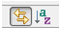
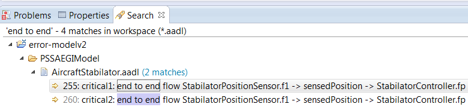
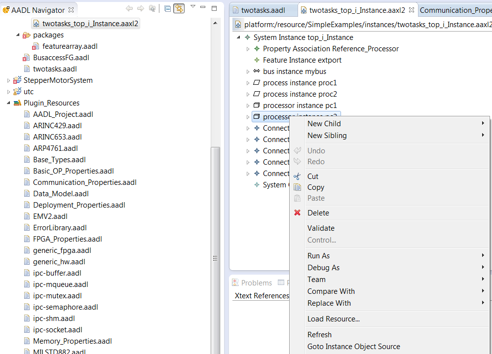

You can navigate AADL text models in several ways.
Outline The outline view shows the model in the text editor as a tree structure. Selecting an element in the outline view causes the editor to move to that object in the text. You can disable this synchronization between the outline and the text with the double arrow button at the top of the Outline view. You can also have to outline view sorted alphabetically instead of the order in the text.
Search: You can use the Eclipse search facility under the Search menu to find things in AADL files. The results will be shown in a Search view.
Double click on one of the result entries and the AADL text editor will open this location.
You can also use the find/replace capability within the AADL text editor. The commands are available under the Edit menu and can be invoked by short cut commands. The short cut keys are shown in the Edit menu. For example,
Hyperlinks: All references in an AADL model are hyperlinked to the model element the reference points to.
Hold down the
Note: The context menu command Open Declaration (F3) also gets you to the model element that is being referenced.
Find Classifiers and Properties: The AADL text editor lets you find component types, component implementations, feature group types, property definitions, types, and constants. You locate them with the Open Model Element (ctrl-shift-F3) command in the Navigate menu. A dialog box will list all that can be referenced from the current AADL text editor location. You can narrow the list by typing the first few characters of the model element you are looking for. You then select the element by double clicking.
Annotations (Markers) and Problem View: The model may be annotated with Markers from the AADL compiler and various analysis tools. You can navigate to the model location identified by the marker by double clicking on the marker in the Problem view.
You can also navigate to the next or previous annotation with the tool bar commands in the AADL text editor.

Quick Outline: When in the text editor, you can type
Navigation History: When you navigate to different locations within a file, follow references/links to other files, go to the location of a Marker, or the result of a search, Eclipse keeps a history. Yellow navigation tool buttons let you move through the history and go back to a location you navigated from.
From Instance model to AADL Text: The instance model can be viewed in an instance model editor by double clicking on the appropriate aaxl2 file in the instances folder. You can go to the model element in the AADL text corresponding to the selected instance model element using the Goto Instance Object Source command in the context menu.
